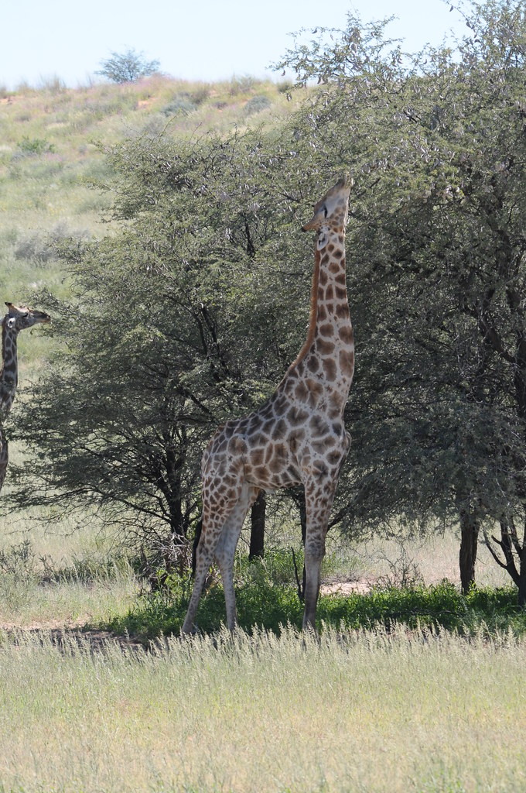
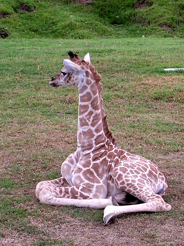
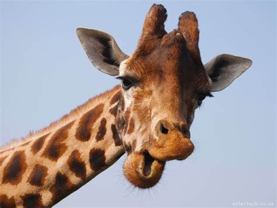

Intro
As the tallest terrestrial animal, giraffes tower over not only the animal king, but the entire world.
Lifestyle
Roaming grasslands in small groups, giraffe can move up to a top speed of 35mph. Although awkward and unstable at birth, giraffe tend to grow out of this and make use of their long limbs. Giraffe typically drink once every several days, as they get most water from plants. Eating and drinking relies heavily on their large tongues, twisting through plants to gain nutrients for the day. This method will allow giraffes to avoid bending over too much and being less vulnerable to nearby predators. Male "bulls" also tend to fight by swinging their necks at each other.
Endangerment
Every year, hundreds of giraffe are killed by hunting, farming, mining, and pollution. People pay thousands of dollars to hunt giraffe and kill them simply for a “prize” However, this poaching is far from normal and continues to occur due to the money that circulates from it. At this time, giraffe are listed as “endangered” If this trend continues, giraffe will eventually become extinct. The only way to prevent this is if we take action and move them to safer regions. Places like natural conservations are the most ideal, protecting them from outside predators and allowing reproduction.
 